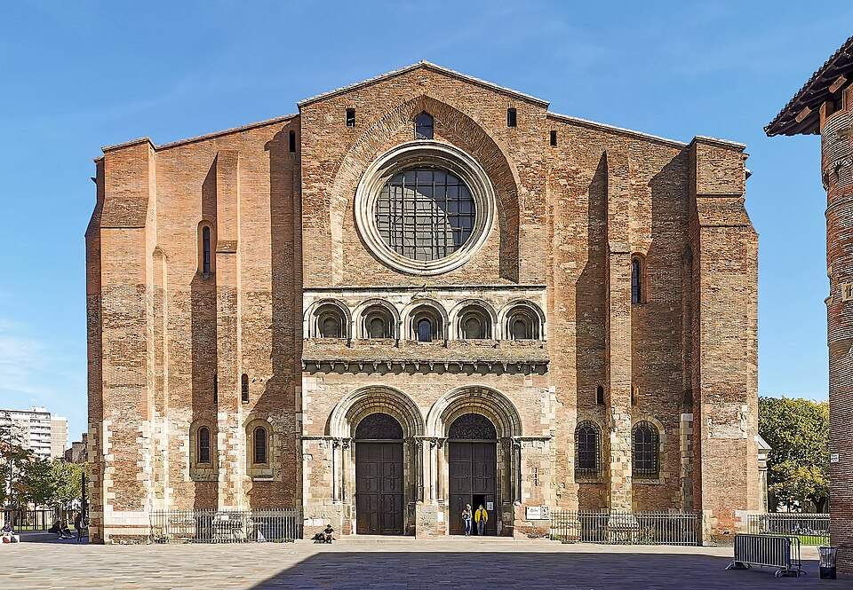
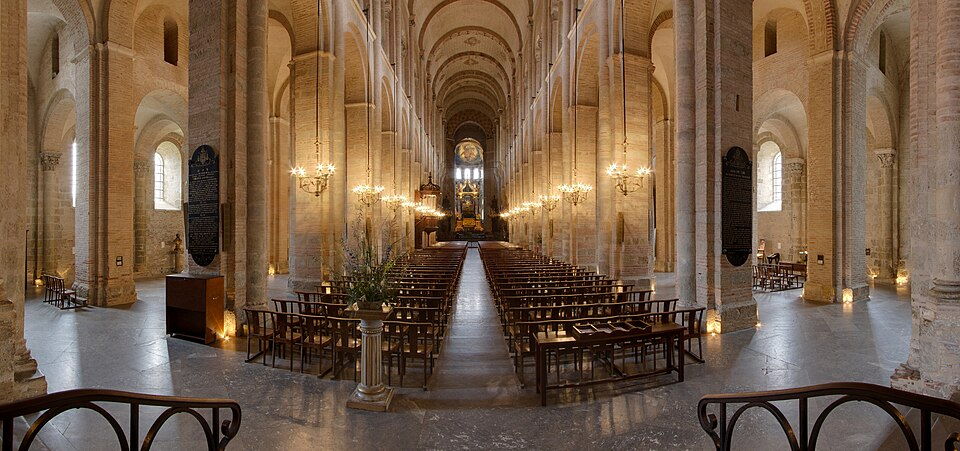
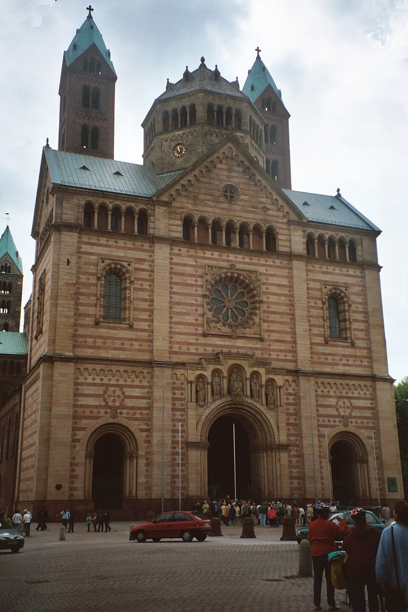
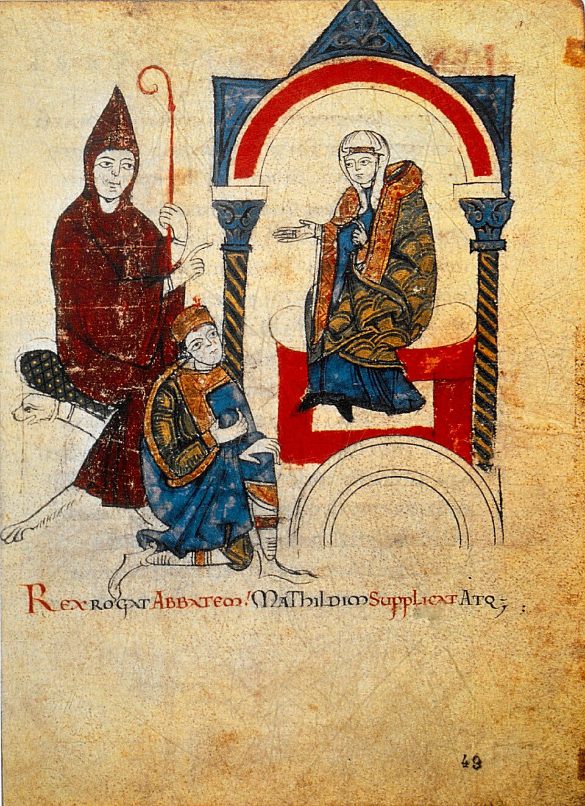
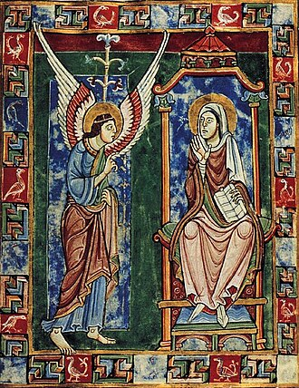
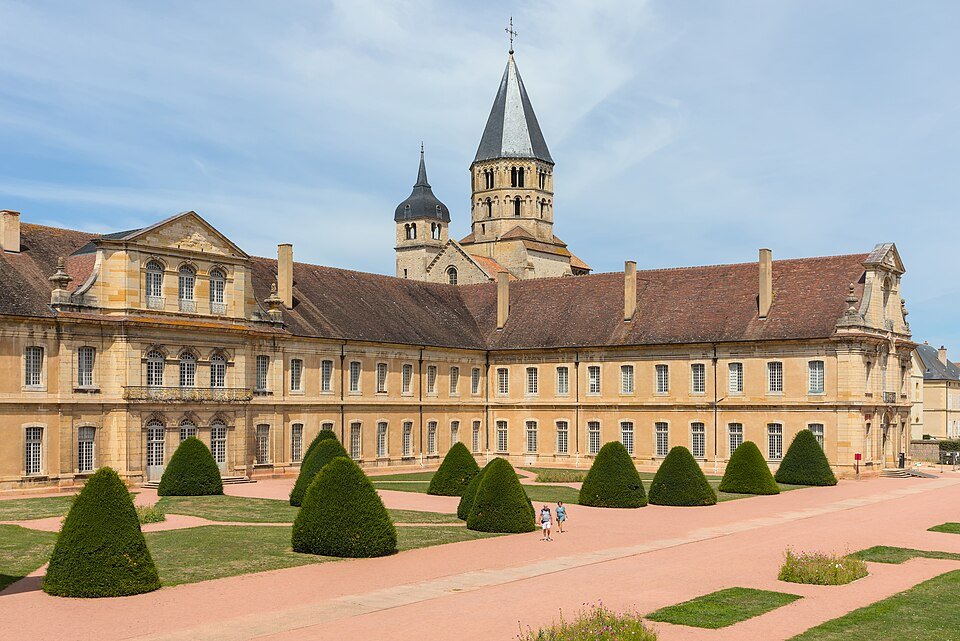
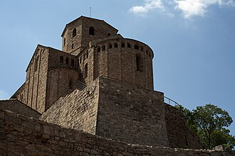
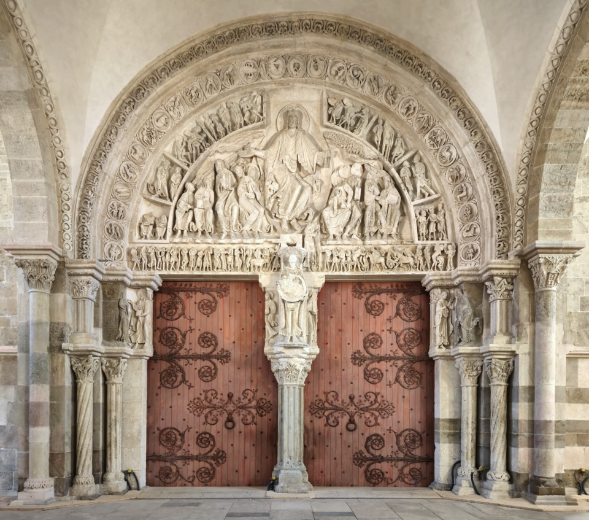
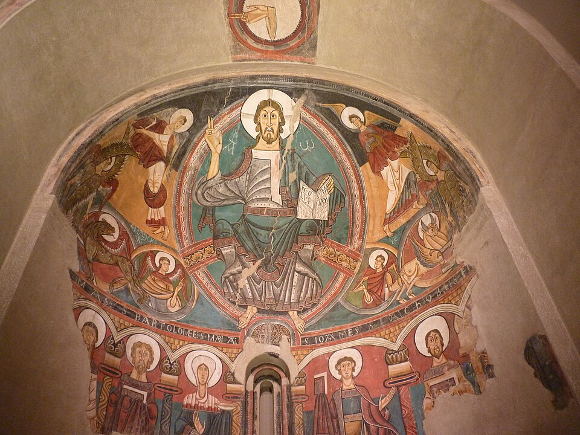

図解：ロマネスクの美術
ロマネスクが広まるまで
- 800年頃〜
 カール大帝の古代復興半円アーチの教会
カール大帝の古代復興半円アーチの教会
オットー朝へ受け継ぐ - 9世紀頃〜


巡礼で信者が移動1095年から十字軍も
巡礼路に教会が建つ - 11世紀頃〜


各地に共通する様式半円アーチの石造建築
19世紀にロマネスクと命名 - 1077年


教皇と教会が力を持つカノッサの屈辱
十分の一税で富を得る
初期中世から何が変わったか
図版の出典
- 《アーヘン大聖堂（北側外観）》宮廷礼拝堂：オド・ド・メッス／後代増築：複数の建築家：出典（CC BY-SA 2.5）
- 《サン・セルナン大聖堂の西正面》建築者不詳：出典（CC BY-SA 4.0）
- 《トゥールーズ、サン・セルナン聖堂の身廊》作者不詳：出典（CC BY 3.0（PierreSelim撮影））
- 《ピサ大聖堂（サンタ・マリア・アッスンタ大聖堂）》ブスケット／ライナルド：出典（CC BY-SA 4.0）
- 《シュパイアー大聖堂（現存西正面）》中世の建築工匠は作者不詳：出典（CC BY 3.0（Dguendel撮影））
- 《Vita Mathildisのハインリヒ4世、クリュニーのユーグ、マティルダ（fol.49v）》挿絵作者不詳／本文著者ドニゾ：出典（Public domain（PD-old））
- 《受胎告知（セント・オールバンズ詩篇）》作者不詳（イングランドの写本画家）：出典（Public domain（PD-Art／PD-old-100））
重要人物
皇帝
教皇
肖像・図版の出典
- 《Vita Mathildisのハインリヒ4世、クリュニーのユーグ、マティルダ（fol.49v）》挿絵作者不詳／本文著者ドニゾ：出典（Public domain（PD-old））
ロマネスク様式の成立
初期中世の地域ごとの美術
動画 0:35～395年、ローマ帝国皇帝テオドシウス帝の死後、広大な範囲を統治することが難しくなった帝国は東西に分割されました。しかし476年、以前から大移動してきたゲルマン民族の影響などによって、西ローマ帝国は100年も経たずに滅亡します。その後、西ヨーロッパの美術には地域ごとの特色が現れました。
現在のフランスなどの原型となるフランク王国では、ゲルマン民族の鳥獣や魚のモチーフとキリスト教が組み合わされ、鳥獣文という独特な文字を用いた写本が作られました。スペインやポルトガルにあたるイベリア半島では、キリスト教圏の国をイスラム勢力が征服したことから、新たな様式が誕生します。アイルランドでは、ケルト民族のラ・テーヌ文化とキリスト教美術が合わさり、世界で最も美しい写本とも称される三大ケルト装飾写本が生み出されました。これらが、初期中世の美術です。
半円アーチとロマネスクの名
動画 1:42～広大な領土が一つの国に支配されていなかったため、地域ごとに異なる美術が展開されました。ところが11世紀頃から、建築では各地に同じような様式が見られるようになります。イタリアのピサ大聖堂、フランスのクリュニー、ドイツのシュパイアー大聖堂、スペインのサン・ビセンテ教会などが代表例です。
画像を拡大 ＋
《ピサ大聖堂（サンタ・マリア・アッスンタ大聖堂）》
- 作者
- ブスケット／ライナルド
- 制作時期
- 1064年創建、1118年献堂、12世紀末までに主要部完成／後代改修を含む
- 所在地・所蔵
- ピサ、イタリア
- 素材・形式
- 建築
出典・画像について


画像を拡大 ＋《クリュニー修道院の現存修道院棟と鐘塔》
- 作者
- 建築者不詳
- 制作時期
- 前景の修道院棟18世紀／奥の鐘塔は中世
- 所在地・所蔵
- クリュニー、ソーヌ＝エ＝ロワール、フランス
- 素材・形式
- 建築
出典・画像について

《シュパイアー大聖堂（現存西正面）》
- 作者
- 中世の建築工匠は作者不詳
- 制作時期
- 1030年頃着工、11世紀を中心に建設／西構え1854～1858年再建
- 所在地・所蔵
- ドイツ、シュパイアー
- 素材・形式
- 建築
出典・画像について


画像を拡大 ＋《サン・ビセンス教会（サント・ビセンス・デ・カルドナ）》
- 作者
- 建築家不詳
- 制作時期
- 1019～1040年
- 所在地・所蔵
- スペイン、カタルーニャ、カルドナ城
- 素材・形式
- 建築
出典・画像について
これらの建築は各地に分散しながらも、古代ローマを思わせる半円アーチを特徴とする石造建築でした。19世紀の歴史家や美術史家は、その特徴に基づいて、この時代の芸術様式を「ローマ風」を意味するロマネスクと呼びました。キリスト教が文化を独占していた時代の美術です。
カロリング朝からの継承
動画 2:37～ロマネスク建築の始まりには、カロリング朝のカロリング・ルネサンスがあります。ローマ教皇から西ローマ帝国皇帝の称号を受けたカール大帝が、文化の面でも古代ローマを復興させようとした運動です。建築にも及び、この時すでに半円アーチを持つ教会が建てられていました。神聖ローマ帝国となった東フランク王国のオットー朝にも、この流れが受け継がれます。
画像を拡大 ＋
《アーヘン大聖堂（北側外観）》
- 作者
- 宮廷礼拝堂：オド・ド・メッス／後代増築：複数の建築家
- 制作時期
- 宮廷礼拝堂800年頃／後代増築を含む
- 所在地・所蔵
- アーヘン、ドイツ
- 素材・形式
- 建築
出典・画像について
巡礼と十字軍
聖地と聖遺物、土地を探す巡礼
動画 3:07～フランク王国内の建築運動が西洋全体へ広がった理由を考えるうえで、重要なのが聖地巡礼と十字軍遠征です。聖地巡礼とは、キリスト教の重要な拠点を巡る旅を指します。現代では、アニメの舞台をファンが訪れることも聖地巡礼と呼びますが、この呼び方はキリスト教の聖地巡礼に由来します。
聖地には、教皇のいるローマや、キリストが処刑されたエルサレムがあります。さらに9世紀頃、現在のスペイン北西部で十二使徒の一人、大ヤコブの遺体が発見され、この地も聖地となりました。サンティアゴ・デ・コンポステーラには、ローマやエルサレムまで行くことが難しいフランス北部の信者も巡礼しました。
聖地には、聖人の遺骸や遺品である聖遺物が収められ、信者の崇敬の対象となっていました。それらを収める聖遺物箱も、この時代の美術品です。信者は聖遺物をひと目見るため、聖地を訪れました。
同じ個体・写本頁と利用可能な画像を確定できず掲載を保留しています。
《二段ガラスケース内の聖遺物（個体未確定）》
- 作者
- 未確定
- 制作時期
- 未確定
- 所在地・所蔵
- 未確定
- 素材・形式
- 聖遺物容器
出典・画像について
同じ個体・写本頁と利用可能な画像を確定できず掲載を保留しています。
遠方まで巡礼したのには、信仰以外の現実的な理由もありました。信者は巡礼しながら、新しく住める土地も探していました。当時の西欧では、農業による食物生産技術の向上で人口が増え、その増加が他地域への進出を促していたのです。
十字軍遠征と人々の移動
動画 4:26～巡礼が盛んになるなか、エルサレム奪還のために結成されたのが十字軍です。教皇の命により、イスラム国家が支配していた聖地を奪還する軍でした。もともとビザンツ帝国の領土であったエルサレムの支配権が、強大化したセルジューク朝に奪われ、圧迫を受けたビザンツ帝国は西ヨーロッパへ救援を求めました。これに応える形で、1095年のクレルモン公会議で、教皇ウルバヌス2世が十字軍を招集しました。
東西の教会は良好な関係ではありませんでしたが、ローマ側には東に恩を売り、聖地を奪還してキリスト教の力をさらに強める狙いもありました。軍といっても騎士ばかりではなく、約4分の3が巡礼者だったとされます。
巡礼路に建つ教会
動画 5:29～ただし、セルジューク朝自体は、他教徒の巡礼を認めていたという話もあります。第1回十字軍遠征は、1099年のエルサレム奪還という形で成功しました。聖地巡礼と十字軍遠征は、信者をさまざまな場所へ大移動させ、西欧各地へロマネスク建築が広がる大きな要因になりました。巡礼路が開拓され、ロマネスク建築の教会のほとんどはその道の途中に建てられ、信者の中継地点となったのです。
フランスのトゥールーズにあるサン・セルナン大聖堂は、サンティアゴ・デ・コンポステーラへ向かう多数の巡礼者を迎え入れてきました。多くの巡礼者を迎えるために内部は広く作られ、バシリカ式の構造を持ちます。

《サン・セルナン大聖堂の西正面》
- 作者
- 建築者不詳
- 制作時期
- 11世紀末～12世紀を中心に建設／後世改修を含む
- 所在地・所蔵
- トゥールーズ、フランス
- 素材・形式
- 建築
出典・画像について

《トゥールーズ、サン・セルナン聖堂の身廊》
- 作者
- 作者不詳
- 制作時期
- 1080年頃着工、1096年献堂／後続建設・改修を含む
- 所在地・所蔵
- フランス、トゥールーズ、サン・セルナン聖堂
- 素材・形式
- 建築
出典・画像について
巡礼には新たな居住地を探す目的もあったため、定住した土地に教会が建てられました。そのため、ロマネスク建築は田舎にも多く見られます。信者の移動によって技術も伝わり、各地に共通する建築様式が生まれたのです。どの美術様式も突然現れたのではなく、歴史的背景のもとで生まれたことを考える必要があります。
建築・彫刻・壁画・写本
石の屋根、厚い壁、暗い内部
動画 6:34～サン・セルナン大聖堂を例に、建築の特徴を見てみましょう。大きな変化は、それまで木造だった屋根を石造にしたことです。木造はいずれ風化して失われるため、永遠性を保つために石造にしたとされます。
石造の屋根は重く、バットレスに大きな負荷がかかるため、壁も厚くする必要がありました。大きな窓を作ると崩れてしまうので、扉の開口部や窓は小さく狭く作られました。光が入りにくく、内部は暗い空間となります。写真では照明のため少し明るく見えますが、照明がなければかなり暗いと考えられます。
薄暗さには、祈りに集中できるという利点もあります。派手さはありませんが、その重厚感がロマネスク建築の魅力です。田舎に定住した信者は、この薄暗い空間で熱心に祈りを捧げていました。
聖書を伝えるティンパヌム
動画 7:32～壁面には、キリストや聖書の物語を主題とする彫刻が施されました。初期キリスト教の美術と同じく、聖書を視覚的に分かりやすく伝える意味もありました。特に、扉口上部にある半円形の壁面、ティンパヌムには、力のこもった表現が見られます。


画像を拡大 ＋《使徒たちに布教の使命を授けるキリスト（ナルテクス中央ティンパヌム）》
- 作者
- 作者不詳
- 制作時期
- 1120～1130年頃
- 所在地・所蔵
- フランス、ヴェズレー、サント・マドレーヌ大聖堂
- 素材・形式
- 石造浮彫
出典・画像について
画像出典：NateBergin
CC BY 4.0
作品情報：作品・画像・利用条件
枠組みの法則と自由な表現
動画 7:49～彫刻の人体の比率は、現実にはあり得ないものに見えます。これは、まず枠ができているためです。もともと何もない平面であったティンパヌムに、ある題材の浮き彫りを作ろうとするため、人物のプロポーションを無視した彫刻が生まれます。柱の柱頭にも同じような表現があり、これを「枠組みの法則」と呼びます。
同じ個体・写本頁と利用可能な画像を確定できず掲載を保留しています。
《人物を配した柱頭彫刻（所在地・主題未確定）》
- 作者
- 未確定
- 制作時期
- 未確定
- 所在地・所蔵
- 未確定
- 素材・形式
- 石造浮彫
出典・画像について
同じ個体・写本頁と利用可能な画像を確定できず掲載を保留しています。
不自然に見える彫刻は、写実表現を重視する時代には低く評価されました。しかし20世紀以降は、その不自然さゆえの自由な表現が再評価されています。通常は思いつきにくい独特な表現方法ともいえます。
威厳ある壁画と地域差
動画 8:40～ビザンティン美術にも見られたように、聖人を写実的に表すと親しみが生まれます。そこで、近寄りがたい威厳を保つため、こうした不自然な形で表現されました。この傾向は、教会内部のアプス上部に描かれたフレスコ画にも見られます。
十字軍遠征は東西の交流を活発にし、西欧もビザンティン美術の影響を受けました。特に現在のイタリアにあたる地域では、青い背景を特徴とする壁画が見られます。ビザンツ帝国に近い西ヨーロッパ南部ほど、その影響が強かったのです。
同じ個体・写本頁と利用可能な画像を確定できず掲載を保留しています。
《アプスのキリスト（教会・個体未確定）》
- 作者
- 未確定
- 制作時期
- 未確定
- 所在地・所蔵
- 未確定
- 素材・形式
- フレスコ画
出典・画像について
同じ個体・写本頁と利用可能な画像を確定できず掲載を保留しています。
スペインでは、キリスト教とイスラム教が融合したモサラベ様式の影響で、太い線と派手な色使いが特徴となります。一方、ヨーロッパ北部ではカロリング朝の伝統が受け継がれ、白を基調とする落ち着いた壁画が描かれました。動物のモチーフにも、メロヴィング朝やカロリング朝の伝統が見られます。共通する様式のなかにも、地域差があるのです。


画像を拡大 ＋《サン・クリメント・デ・タウイのアプス壁画《荘厳のキリスト》》
- 作者
- タウイの画家（Master of Taüll）
- 制作時期
- 1123年頃
- 所在地・所蔵
- バルセロナ、カタルーニャ美術館（MNAC）、015966-000
- 素材・形式
- フレスコ画
出典・画像について
同じ個体・写本頁と利用可能な画像を確定できず掲載を保留しています。
《フランスのフレスコ画（個体未確定）》
- 作者
- 未確定
- 制作時期
- 未確定
- 所在地・所蔵
- 未確定
- 素材・形式
- フレスコ画
出典・画像について
同じ個体・写本頁と利用可能な画像を確定できず掲載を保留しています。
教会で作る写本と分かりやすさ
動画 9:37～写本制作も継続して行われました。カロリング朝やオットー朝の写本は基本的に宮廷から出ませんでしたが、ロマネスク時代には教会で制作されました。趣味のための写本から、キリスト教の教えを広める写本へと変わり、挿絵では分かりやすさが重視されます。
受胎告知は、聖母マリアがキリストを身ごもる場面です。二つの絵は色合いが異なっていても、人物のポーズなどから、一目で同じ受胎告知の場面だと分かるように表現されています。

《受胎告知（セント・オールバンズ詩篇）》
- 作者
- 作者不詳（イングランドの写本画家）
- 制作時期
- 1120年代
- 所在地・所蔵
- ドイツ、ヒルデスハイム、聖ゴーデハルト教会
- 素材・形式
- 写本挿絵
出典・画像について
複製・復原または刊行図版由来の画像です。原品そのものの現代写真とは区別しています。
画像出典：Unknown Miniaturist, English (active 1120s)
Public domain（PD-Art／PD-old-100）
作品情報：作品・画像・利用条件
制作メモ
低解像度の配信画像です。
同じ個体・写本頁と利用可能な画像を確定できず掲載を保留しています。
《受胎告知（右側写本、個体未確定）》
- 作者
- 未確定
- 制作時期
- 未確定
- 所在地・所蔵
- 未確定
- 素材・形式
- 写本挿絵
出典・画像について
同じ個体・写本頁と利用可能な画像を確定できず掲載を保留しています。
教会の権力
王権と叙任権闘争
動画 10:09～高価な写本を各地の教会が作れた背景には、当時の西ヨーロッパで、王より教会の力が強かったことがあります。西フランク王国は北方から来たヴァイキングに苦しめられ、王権が弱まりました。カロリング朝が断絶してカペー朝となり、フランス王国となった後も、王権は弱いままでした。
東フランク王国から生まれた神聖ローマ帝国でも、皇帝は世襲ではなく、選挙で選ばれるものでした。それでも、司教や聖職者を任命する叙任権を持つことで、威厳を保っていました。しかし教皇グレゴリウス7世は、叙任権は教会にあるとして、皇帝ハインリヒ4世と争います。これが叙任権闘争です。
カノッサの屈辱と破門
動画 11:02～教皇が皇帝の破門を宣告すると、ハインリヒ4世は急速に支持を失いました。許しを得るため教皇の城で三日間立ち尽くした「カノッサの屈辱」は、教皇の権力の強さを改めて示すものでした。

《Vita Mathildisのハインリヒ4世、クリュニーのユーグ、マティルダ（fol.49v）》
- 作者
- 挿絵作者不詳／本文著者ドニゾ
- 制作時期
- 1115年頃（1077年は事件年）
- 所在地・所蔵
- バチカン図書館、Vat. lat. 4922、fol.49v
- 素材・形式
- 写本挿絵
出典・画像について
以後、教皇は逆らう王に対して、破門を示して脅す戦術を取るようになりました。たとえ王でも、キリスト教徒でなくなることは社会的な死を意味していました。
教会の経済力と美術
動画 11:29～西ヨーロッパの農民には、生産物の10分の1を教会へ納める「十分の一税」が課されました。教会は経済力をつけ、文化も独占するようになります。高価な写本や大規模な教会を作れたのには、こうした背景がありました。
浮き彫り彫刻に見られる独特な表現は、隔絶された世界だったからこそ隆盛したのかもしれません。ゴシック時代になると、教皇の権力が低下し、美術もまた変化していきます。
要点まとめ
- 初期中世の西ヨーロッパでは地域ごとの美術が展開したが、11世紀頃から各地に同じような建築が見られるようになった。ピサ大聖堂、クリュニー、シュパイアー大聖堂、サン・ビセンテ教会などが代表例。
- 古代ローマを思わせる半円アーチを特徴とする石造建築から、19世紀の研究者がこの様式を「ローマ風」を意味するロマネスクと呼んだ。始まりにはカロリング・ルネサンスがある。
- ロマネスクが広がった理由は聖地巡礼と十字軍遠征。聖地にはローマ、エルサレム、大ヤコブの遺体が発見されたサンティアゴ・デ・コンポステーラがあり、聖遺物が崇敬された。1095年のクレルモン公会議で教皇ウルバヌス2世が十字軍を招集した。
- 教会の多くは巡礼路の途中や巡礼者が定住した土地に建てられ、田舎にも多い。トゥールーズのサン・セルナン大聖堂が例。
- 石造の屋根を支えるため壁は厚く、窓は小さく、内部は暗い。扉口上部のティンパヌムなどの彫刻は、枠に合わせて人体の比率を変える「枠組みの法則」に従う。
- 壁画は威厳を保つため不自然な形で表された。イタリアではビザンティンの影響で青い背景、スペインではモサラベ様式の影響で太い線と派手な色、北部では白を基調とする落ち着いた壁画が描かれた。
- 写本は教会で制作され、教えを広めるため分かりやすさが重視された。
- 当時は王より教会の力が強かった。教皇グレゴリウス7世と皇帝ハインリヒ4世の叙任権闘争では「カノッサの屈辱」が起き、農民は十分の一税を教会へ納めた。教会の経済力が大規模な教会や高価な写本を支えた。
確認問題
答えを考えてから開いてください。選択問題は選ぶとすぐ正誤と解説が出ます（選択肢の順番は開くたびに変わります）。各問題のリンクから該当の章や作品カードへ戻れます。
選択問題：0／5問回答・正解0
A. 一問一答答えを考えてから開く
問1古代ローマを思わせる半円アーチを特徴とする、11世紀頃から各地に広がった様式を、19世紀の研究者は「ローマ風」を意味する何という名で呼んだか。
答えを見る
問2聖地に収められ信者の崇敬の対象となった、聖人の遺骸や遺品を何と呼ぶか。
答えを見る
問3もともと何もない平面に題材の浮き彫りを当てはめるため、人物のプロポーションを無視した彫刻が生まれることを何と呼ぶか。
答えを見る
B. 4択選ぶとすぐ正誤と解説
問41095年のクレルモン公会議で十字軍を招集した教皇は誰か。
→ 本文で確認（十字軍遠征と人々の移動）
問5破門された皇帝ハインリヒ4世が、許しを得るため教皇の城で三日間立ち尽くした出来事を何と呼ぶか。
→ 本文で確認（カノッサの屈辱と破門）
問6ロマネスク建築で窓が小さく、内部が暗くなった理由はどれか。
→ 本文で確認（石の屋根、厚い壁、暗い内部）
C. 図版問題画像を見て答える
問7この彫刻が施された、扉口上部の半円形の壁面を何と呼ぶか。
→ 作品カードで確認
問8このアプス壁画の主題は何か。人物がこのような不自然な形で表された理由も考えよ。
答えを見る
問9この建築の名前はどれか。
→ 作品カードで確認